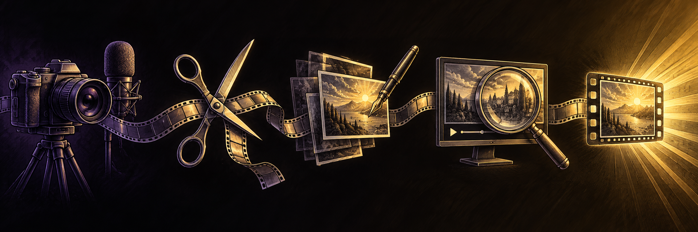

DE TU CÁMARA A TU AUDIENCIA
+ SFStudioTú grabas.
La idea toma forma.

Tu criterio guía. Cada revisión mejora el resultado. ↖ Explora una etapa
Cargando el proyecto…
El mapa explica el método. Los archivos muestran lo que ocurrió en este video.